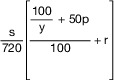
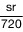

THWAbrV
Ausfertigungsdatum: 13.10.2021
Vollzitat:
"THW-Abrechnungsverordnung vom 13. Oktober 2021 (BGBl. I S. 4667)"
| Ersetzt V 215-10-4 v. 13.12.2012 I 2674 (THW-AbrV) |
(+++ Textnachweis ab: 1.11.2021 +++)
| Eingesetzte Helferinnen und Helfer | Auslagensatz je angefangener Einsatzstunde | Gebührensatz je angefangener Einsatzstunde | |
|---|---|---|---|
| 1 | 2 | 3 | |
| 1 | Helferinnen und Helfer mit Anspruch auf
| 25,00 € | 28,00 € |
| 2 | Andere Helferinnen und Helfer | 4,00 € | 7,00 € |
| Eingesetzte Ausstattung | Auslagensatz je angefangener Einsatzstunde | Gebührensatz je angefangener Einsatzstunde | |
|---|---|---|---|
| 1 | 2 | 3 | |
| 1 | Anhänger | 1,40 € | 4,40 € |
| 2 | Anhänger 2 t Nutzlast | 0,40 € | 1,00 € |
| 3 | Anhänger BDF-Lafette | 1,10 € | 3,30 € |
| 4 | Anhänger Drucklufterzeuger | 1,40 € | 4,40 € |
| 5 | Anhänger FGr I | 1,10 € | 3,50 € |
| 6 | Anhänger FGr O | 0,40 € | 1,20 € |
| 7 | Anhänger FGr Sp | 1,10 € | 3,50 € |
| 8 | Anhänger Führung und Lage | 3,90 € | 12,20 € |
| 9 | Anhänger mit Abstützsystem Holz | 2,40 € | 7,50 € |
| 10 | Anhänger mit Netzersatzanlage – groß – | 5,70 € | 18,10 € |
| 11 | Anhänger mit Netzersatzanlage – mittel – | 2,00 € | 6,30 € |
| 12 | Anhänger mit Netzersatzanlage – sehr groß – | 10,70 € | 34,20 € |
| 13 | Anhänger mit Schmutzwasserpumpe – groß – | 8,30 € | 26,40 € |
| 14 | Anhänger mit Schmutzwasserpumpe – klein – | 5,20 € | 16,70 € |
| 15 | Anhänger mit Schmutzwasserpumpe – mittel – | 7,70 € | 24,50 € |
| 16 | Anhänger 2 t Nutzlast mit Spezialaufbau für FGr K | 1,00 € | 3,00 € |
| 17 | Anhänger OV | 0,10 € | 0,20 € |
| 18 | Anhänger Plane/Spriegel | 1,30 € | 4,00 € |
| 19 | Anhänger Plattform | 1,60 € | 5,10 € |
| 20 | Anhänger Tieflader | 1,60 € | 4,90 € |
| 21 | Anhänger Trinkwasseraufbereitungsanlage | 3,50 € | 11,00 € |
| 22 | Auflieger Sattelzug | 2,20 € | 7,20 € |
| 23 | Baumaschine Bagger | 7,70 € | 23,60 € |
| 24 | Baumaschine Radlader | 8,90 € | 27,40 € |
| 25 | Baumaschine Teleskoplader | 5,90 € | 18,30 € |
| 26 | Behälterausstattung | 1,70 € | 5,70 € |
| 27 | Beleuchtung Erweiterung – mittel – | 0,50 € | 1,70 € |
| 28 | Besprechungs- und Arbeitsraum | 0,20 € | 0,80 € |
| 29 | Bohr- und Aufbrechausstattung – groß – | 0,80 € | 3,30 € |
| 30 | Brückenbaumaterial | 0,60 € | 2,00 € |
| 31 | Einsatzgerüstsystem | 1,00 € | 3,80 € |
| 32 | Einsatzstellensicherungssystem | 3,20 € | 10,70 € |
| 33 | Einsatzunterbringung Logistikstelle Verpflegung | 0,40 € | 1,60 € |
| 34 | Energieverteilung – groß – | 2,20 € | 7,40 € |
| 35 | Energieverteilung – klein – | 0,20 € | 0,60 € |
| 36 | Energieverteilung – mittel – | 0,50 € | 1,70 € |
| 37 | Ergänzungsausstattung als FB FGr. B | 0,40 € | 1,50 € |
| 38 | Ergänzungsausstattung als FB FGr. BrB | 0,30 € | 0,80 € |
| 39 | Ergänzungsausstattung als FB FGr. E | 0,80 € | 3,30 € |
| 40 | Ergänzungsausstattung als FB FGr. I | 1,30 € | 4,40 € |
| 41 | Ergänzungsausstattung als FB FGr. K | 0,40 € | 1,40 € |
| 42 | Ergänzungsausstattung als FB FGr. N | 0,20 € | 0,60 € |
| 43 | Ergänzungsausstattung als FB FGr. O | 0,90 € | 3,10 € |
| 44 | Ergänzungsausstattung als FB FGr. Öl | 1,00 € | 4,10 € |
| 45 | Ergänzungsausstattung als FB FGr. R | 38,20 € | 129,80 € |
| 46 | Ergänzungsausstattung als FB FGr. SB | 0,30 € | 0,70 € |
| 47 | Ergänzungsausstattung als FB FGr. Sp | 2,70 € | 11,20 € |
| 48 | Ergänzungsausstattung als FB FGr. TW | 1,40 € | 6,00 € |
| 49 | Ergänzungsausstattung als FB FGr. W | 3,50 € | 14,90 € |
| 50 | Ergänzungsausstattung als FB FGr. WP | 0,60 € | 2,00 € |
| 51 | Ergänzungsausstattung als FB Tr. UL | 11,60 € | 39,40 € |
| 52 | Fahrplatten | 0,30 € | 0,80 € |
| 53 | Fachgruppenausstattung allgemein | 1,00 € | 2,00 € |
| 54 | Fahrzeuge und Anhänger Richtfunk | 22,50 € | 80,30 € |
| 55 | Fernmeldeausstattung, FGr-spezifisch | 0,70 € | 3,30 € |
| 56 | Fernmeldebauausstattung | 1,80 € | 6,00 € |
| 57 | Fernmeldekraftwagen | 4,80 € | 16,80 € |
| 58 | Führungs- und Kommunikationskraftwagen | 12,40 € | 44,40 € |
| 59 | Führungskraftwagen | 4,20 € | 18,90 € |
| 60 | Gabelstapler | 1,20 € | 4,40 € |
| 61 | Gerätekraftwagen | 7,50 € | 26,90 € |
| 62 | Hebe- und Zuggeräteausstattung – mittel – | 0,70 € | 2,40 € |
| 63 | Hebe- und Zuggeräteausstattung – schwer – | 1,90 € | 6,40 € |
| 64 | Hochwasserpegel | 1,10 € | 7,10 € |
| 65 | Hydraulikaggregat | 0,10 € | 0,40 € |
| 66 | Kleines Boot | 1,30 € | 4,00 € |
| 67 | Kommunikationsausstattung – groß – | 2,20 € | 13,50 € |
| 68 | Kommunikationsausstattung – klein – | 0,40 € | 2,10 € |
| 69 | Kommunikationsausstattung – mittel – | 3,60 € | 22,30 € |
| 70 | Lagercontainer | 0,30 € | 1,00 € |
| 71 | Lastkraftwagen Kipper | 4,10 € | 14,60 € |
| 72 | Lastkraftwagen mit Ladebordwand | 5,70 € | 20,20 € |
| 73 | Lastkraftwagen mit Ladekran – leicht – | 7,00 € | 25,00 € |
| 74 | Lastkraftwagen mit Ladekran – mittel – | 11,10 € | 39,70 € |
| 75 | Lastkraftwagen mit Ladekran – schwer – | 14,70 € | 52,30 € |
| 76 | Lastkraftwagen Wechsellader | 4,50 € | 16,00 € |
| 77 | Mannschaftslastwagen IV | 4,50 € | 15,90 € |
| 78 | Mannschaftstransportwagen, Technischer Zug | 2,00 € | 9,00 € |
| 79 | Mannschaftstransportwagen Fachgruppe | 2,10 € | 9,50 € |
| 80 | Mannschaftstransportwagen OV | 1,30 € | 5,90 € |
| 81 | Mehrzweckarbeitsboot | 3,50 € | 11,20 € |
| 82 | Mehrzweckgerätewagen | 4,70 € | 16,70 € |
| 83 | Mobile Kraftstoffversorgung | 0,20 € | 0,70 € |
| 84 | Modularer Schwimmkörper | 0,50 € | 1,10 € |
| 85 | Motorsäge, Basis | 0,20 € | 0,70 € |
| 86 | Notunterbringung | 2,00 € | 8,20 € |
| 87 | Ölwehrausstattung | 0,30 € | 1,00 € |
| 88 | Ortungsgeräte | 2,50 € | 11,00 € |
| 89 | Personenkraftwagen – geländegängig – | 1,10 € | 4,90 € |
| 90 | Personenkraftwagen OV | 0,50 € | 3,70 € |
| 91 | Pumpausstattung – klein – MoP/Typ C | 0,10 € | 0,40 € |
| 92 | Pumpausstattung – klein – TP | 0,20 € | 0,50 € |
| 93 | Pumpausstattung FGr WP | 5,60 € | 18,80 € |
| 94 | Pumpausstattung TP FGr N | 0,40 € | 1,30 € |
| 95 | Pumpausstattung TW | 1,50 € | 4,90 € |
| 96 | Rettungsausstattung – groß – | 0,40 € | 1,20 € |
| 97 | Rettungsspinne mit Anhänger | 9,70 € | 34,50 € |
| 98 | Sattelzugmaschine | 3,90 € | 13,80 € |
| 99 | Schwimmkörper Mehrzweckponton | 3,70 € | 11,80 € |
| 100 | Separationsanlage – groß – | 14,00 € | 41,10 € |
| 101 | Separationsanlage – klein – | 16,90 € | 49,60 € |
| 102 | Skimmer | 0,90 € | 3,80 € |
| 103 | Spreiz- und Schneidausstattung | 0,50 € | 3,70 € |
| 104 | Stromerzeuger mit Zubehör | 0,30 € | 1,00 € |
| 105 | Ausstattung für Thermisches Trennen – Plasma – | 0,50 € | 1,60 € |
| 106 | Trenn-, Schweiß- und Brennausstattung | 0,40 € | 1,30 € |
| 107 | Trinkwasseraufbereitungsanlage | 36,90 € | 125,40 € |
| 108 | Trinkwasserlabor im Container | 3,70 € | 12,40 € |
| 109 | Unbemanntes Luftfahrtsystem | 1,70 € | 7,90 € |
| 110 | Verpflegungszubereitungsausstattung | 5,80 € | 19,70 € |
| 111 | Wassertransportausstattung | 0,40 € | 1,20 € |
| 112 | Wasserverteilung und Rohrleitungsbauausstattung | 0,40 € | 1,40 € |
| 113 | Werkstattcontainer | 6,20 € | 28,80 € |
| 114 | Werkzeugausstattung | 0,60 € | 1,40 € |
| Einsatzbezogene Auslagen | 3 % der Gesamtkosten des Einsatzes, jedoch mindestens 15 € und höchstens 150 € je Einsatz |
| Einsatzbezogene Gebühren Sonstige Gebühren umfassen Gemeinkosten, soweit diese einen berücksichtigungsfähigen Anteil an den mit einer Unterstützungsleistung verbundenen Kosten ausmachen. | 7 % der Gesamtkosten des Einsatzes, jedoch mindestens 30 € und höchstens 300 € je Einsatz |
| Gebühr (in Euro je angefangener Einsatzstunde) |  |
| Auslagen für amtshilfebedingte Mehrkosten (in Euro je angefangener Einsatzstunde) |  |
| Ausstattungsgruppe | Reparaturkostenfaktor r | |
|---|---|---|
| Kfz, Anhänger | 0,022 | |
| Baumaschinen und Großgeräte | 0,027 | |
| Geräte mit Motorantrieb | 0,025 | |
| Ausstattung, allgemein | 0,034 |